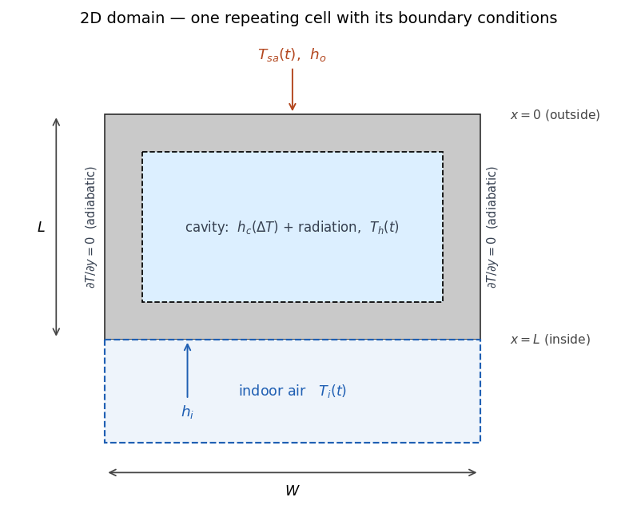
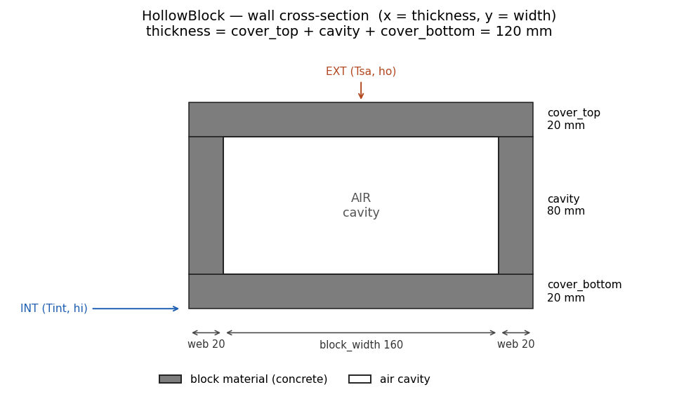
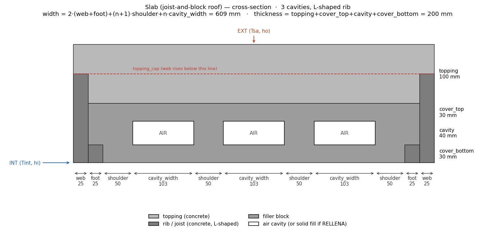

2D model: non-homogeneous systems
The 1D model applies when every layer is homogeneous, so the heat flows only across the thickness. Some constructive systems break that premise: the material changes in the plane perpendicular to the heat flow. A concrete hollow block alternates solid webs and air cavities across its width, and a joist-and-block roof alternates concrete ribs, filler blocks and cavities. In those units the heat also flows in-plane, concentrating through the webs and ribs and crossing the cavities by convection and radiation. A 1D stack cannot simulate this, and an equivalent homogeneous layer with averaged properties does not recover it. For these systems EnerHabitat solves the heat transfer on a 2D cross-section of the unit (Barrios et al. 2016).
Domain and assumptions
Constructive units repeat periodically along the wall or roof, so the domain is a single repeating cell: the block (or the rib-to-rib module) cut across its width and thickness. The lateral cuts are placed on mirror-symmetry planes of the periodic pattern (mid-web, mid-rib), where the temperature field has zero normal gradient, so the sides of the cell are adiabatic.
Axis convention (used throughout these theory pages): \(x\) runs through the thickness, from the outside (\(x = 0\)) to the inside (\(x = L\)), exactly as in the 1D model; \(y\) runs across the width of the repeating unit of the constructive system, from \(y = 0\) to \(y = W\).

The cell is a stack in \(x\) (exterior finishes, the non-homogeneous unit, interior finishes) where the unit itself is a 2D patchwork of materials and, possibly, cavities.
The model keeps every 1D assumption, from the constant properties per material and perfect thermal contact to the film coefficients, the sun–air forcing and the lumped indoor air or fixed setpoint, except that conduction is now two-dimensional in the cross-section. In addition it assumes:
- the cross-section is invariant out of plane: all quantities are per unit length along the wall/roof;
- the lateral sides of the cell are mirror-symmetry planes (adiabatic, as above);
- the air of each cavity (
Fill.AIR) is well mixed, with one temperature \(T_h\) per cavity, and radiatively non-participating; - one uniform convective coefficient \(h_c\) per cavity, evaluated from the mean temperatures of the faces across the thickness;
- the cavity surfaces are grey and diffuse, each emitting at its mean temperature.
The canonical list of assumptions, with the consequence each one has for interpreting the results, is in Assumptions and limits.
Governing equations
In 1D the homogeneous regions are the layers, indexed by \(j\) along \(x\); in 2D they are the material patches of the section (a finish layer, the shell, the L-shaped rib, the topping, the filler block, a solid fill), so the same index \(j\) now enumerates regions of the plane. Within each homogeneous region \(j\) the temperature obeys the two-dimensional extension of the 1D heat equation:
\[ \rho_j\, c_j\, \frac{\partial T_j}{\partial t} \;=\; k_j \left( \frac{\partial^2 T_j}{\partial x^2} + \frac{\partial^2 T_j}{\partial y^2} \right), \qquad j = 1, \dots, M, \tag{1}\]
with, as in the 1D case, continuity of temperature and of the normal conductive flux \(k_j\, \partial T/\partial n\) at the boundary between neighbouring regions.
Equivalently, the whole section can be described by one equation in conservative (divergence) form, with \(k(x,y)\), \(\rho(x,y)\) and \(c(x,y)\) taking the value of the material occupying each point:
\[ \rho\, c\, \frac{\partial T}{\partial t} \;=\; \frac{\partial}{\partial x}\!\left( k\, \frac{\partial T}{\partial x} \right) + \frac{\partial}{\partial y}\!\left( k\, \frac{\partial T}{\partial y} \right). \]
This form carries the flux continuity across the material joints implicitly, which is exactly where the finite-volume discretization evaluates the face conductances.
Boundary conditions
The boundary conditions (Figure 1) close the problem:
\[ \begin{aligned} x = 0:&\quad h_o \left( T_{sa} - T \right) = -k\, \frac{\partial T}{\partial x} && \text{(outdoor, sun–air temperature)}\\[4pt] x = L:&\quad -k\, \frac{\partial T}{\partial x} = h_i \left( T - T_i \right) && \text{(indoor air)}\\[4pt] y = 0,\ y = W:&\quad \frac{\partial T}{\partial y} = 0 && \text{(adiabatic sides, periodicity)} \end{aligned} \tag{2}\]
Here \(W\) is the width of the repeating unit of the constructive system (one hollow block with its half-webs, or one joist-to-joist module of the slab) and \(L\) the total thickness of the constructive system, as in the 1D model. The domain is \(x \in [0, L]\), \(y \in [0, W]\); their expressions in terms of each element’s geometry are given in Geometries. \(T_{sa}\), \(h_o\) and \(h_i\) are exactly those of the 1D model: same average day, same Tsa().
Solution modes
The indoor air \(T_i\) follows the same two solution modes as the 1D model, with two 2D-specific details:
- In the free-running mode the lumped indoor-air node is fed by the width-averaged convective flux from the indoor surface at \(x = L\) (so the energy balance is per unit of indoor surface area, as in 1D).
- In the air-conditioned mode only the indoor node is fixed at the setpoint (\(T_i = T_n\), or
System2D.setpoint); the air of each cavity \(T_h\) keeps floating, governed by Equation 3 throughout the AC solve.
Cavity physics
When the unit’s cavity contains air (Fill.AIR), three heat-transfer mechanisms act together (Barrios et al. 2016): conduction through the surrounding solids, natural convection of the cavity air, and radiation between the cavity surfaces. (The alternative, a solid-filled cavity, is described below.)
The cavity-air node
The air inside each cavity is modelled as a single lumped node at temperature \(T_h\), exchanging heat by convection with the four cavity walls:
\[ \rho_a\, c_a\, A_{cav}\, \frac{dT_h}{dt} \;=\; \oint_{\partial cav} h_c \left( T_w(s) - T_h \right) ds, \tag{3}\]
where \(A_{cav} = w \cdot d\) is the cavity cross-section (width × depth), the integral runs along the cavity perimeter with \(T_w(s)\) the local wall temperature, and all quantities are per unit length in the out-of-plane direction. In the discrete form the perimeter element \(ds\) becomes the face length (\(\Delta x\) or \(\Delta y\)) of each wall node. The convective coefficient \(h_c\) depends on the cavity orientation.
Convective coefficient: walls vs roofs
For a wall (tilt = 90, vertical cavity) EnerHabitat uses the turbulent correlation of Xamán et al. (2005) for tall cavities of façade elements, \(Nu = 0.0857\,Ra_L^{0.3033}\), evaluated in its dimensional form as a function of the temperature difference between the two faces across the thickness and the cavity depth \(d\) (m):
\[ h_c \;=\; C_w\, \frac{\left| T_{out} - T_{in} \right|^{0.3033}}{d^{\,0.0901}}, \qquad C_w = 0.0857\, k_{air} \left( \frac{g\,\beta}{\nu\,\alpha} \right)^{0.3033} \approx 0.59, \tag{4}\]
where \(C_w\) is a constant that groups the air properties, taken as constant in the model, and the exponent of \(d\) follows from the reduction.
For a roof (tilt = 0, horizontal cavity) the regime is Rayleigh–Bénard. If the lower face is not hotter than the upper one the air stratifies stably and only conducts, \(h_c = k_{air}/d\). Otherwise convection sets in, described by the correlation of Hollands et al. (1975) for horizontal layers heated from below:
\[ h_c \;=\; \frac{k_{air}}{d} \left( 1 + 1.44 \left[ 1 - \frac{1708}{Ra} \right]^{+} + \left[ \left( \frac{Ra}{5830} \right)^{1/3} - 1 \right]^{+} \right), \qquad Ra = \frac{g\, \beta\, \Delta T\, d^3}{\nu\, \alpha}, \tag{5}\]
where \([\,\cdot\,]^{+}\) keeps the positive part. The air properties entering \(Ra\) (\(k_{air}\), \(\beta\), \(\nu\), \(\alpha\)) are constants evaluated at 300 K (Incropera et al. 2007). Because \(h_c\) depends on the face temperatures, it is re-evaluated inside the iteration of every time step (see the numerical method).
Radiation between cavity surfaces
The four cavity walls exchange long-wave radiation. The air is non-participating, the surfaces are grey and diffuse with uniform emissivity \(\varepsilon\) (the emissivity parameter, 0.9 by default), and each surface emits at its mean temperature (Incropera et al. 2007). Because grey surfaces reflect, the exchange couples all four surfaces through multiple reflections; the enclosure is solved exactly with the radiosity system in Gebhart form (Gebhart 1961; Incropera et al. 2007). For the four isothermal surfaces the solution reduces to a pairwise expression with constant transfer factors \(\mathfrak{F}_{mn}\):
\[ q_{m \to n} \;=\; \mathfrak{F}_{mn}\, \sigma \left( T_m^4 - T_n^4 \right), \qquad \mathfrak{F} \;=\; \varepsilon^2 \left[ I - (1-\varepsilon)\, F \right]^{-1} F, \tag{6}\]
with \(\sigma\) the Stefan–Boltzmann constant, \(F\) the view-factor matrix and \(I\) the identity matrix. Since the geometry and \(\varepsilon\) are constant, the transfer factors are computed once per cavity geometry.
For a rectangular cavity of width \(w\) and depth \(d\) the view factors follow from the crossed-strings method; e.g. between the top wall and one lateral wall, and between the two opposite walls:
\[ F_{u \to r} = \tfrac{1}{2}\left( 1 + \tfrac{d}{w} - \sqrt{1 + \tfrac{d^2}{w^2}} \right), \qquad F_{u \to d} = 1 - 2 F_{u \to r}. \tag{7}\]
Solid fill (Fill.SOLID)
The cavity can instead be filled with a solid material (e.g. an insulating core): the cavity physics switches off and the fill behaves as one more conducting material in Equation 1. Filling with the same material as the shell makes the unit homogeneous; in that limit the 2D solution reduces to the 1D one, which is one of the package’s validation checks (see Validation).
Geometries
Hollow-block wall: HollowBlock
A shell of a single material with one cavity per cell; walls only (tilt = 90). The repeating cell takes half a web on each side, so the full web between two cavities is 2·web.

- cell width \(W = 2 \cdot \texttt{web} + \texttt{block\_width}\)
- thickness \(L = \texttt{cover\_top} + \texttt{cavity} + \texttt{cover\_bottom}\)
Joist-and-block roof: Slab
Roofs only (tilt = 0). Three solid materials (the compression topping, an L-shaped concrete rib made of web plus foot at each edge of the cell, and the filler block) plus \(n\) equal cavities, each one with its own lumped air node (Equation 3) and its own \(h_c\).

- cell width \(W = 2(\texttt{web} + \texttt{foot}) + (n+1)\cdot\texttt{shoulder} + n\cdot\texttt{cavity\_width}\)
- thickness \(L = \texttt{topping} + \texttt{cover\_top} + \texttt{cavity} + \texttt{cover\_bottom}\)
The rib’s web rises through the whole section except the top topping_cap of the topping, reproducing the real joist profile.
The average day
The climate forcing, that is, the synthetic average day and Tsa(), is exactly the 1D one: see The average day.
Constraints
- The
layerslist of aSystem2Dcontains exactly one 2D element (HollowBlockorSlab); any other entries are ordinary homogeneous layers (finishes), handled as 1D bands of the cross-section. At most 7 layers including the element. - The element’s thickness is derived from its
geometry, so it is not repeated as a layer thickness. - Orientation is validated:
HollowBlockrequirestilt = 90,Slabrequirestilt = 0.
Outputs and units
| Result | Mode | Meaning | Units |
|---|---|---|---|
Ti (pandas.Series) |
both | Indoor air temperature over the converged day | °C |
energy_transfer |
solve() |
Energy delivered to the indoor air | J/(m²·day) |
cooling_energy |
solveAC() |
Cooling demand to hold the setpoint | J/(m²·day) |
heating_energy |
solveAC() |
Heating demand to hold the setpoint | J/(m²·day) |
Tso, Tsi, Thueco |
both | Surface and cavity-air temperature Series on the Tsa() time grid |
°C |
Tfield |
both | Temperature field (nx, ny) at the end of the last day |
°C |
Energies are per unit of indoor surface area (built from the width-averaged flux at \(x = L\), so 1D and 2D results are directly comparable), accumulated over one day: divide by \(3600\) for Wh/(m²·day) or by \(3.6\times10^6\) for kWh/(m²·day).
The convergence diagnostics (days, day_error, converged, inner_iterations, energy_imbalance) and the sampling conventions are described in the API reference.